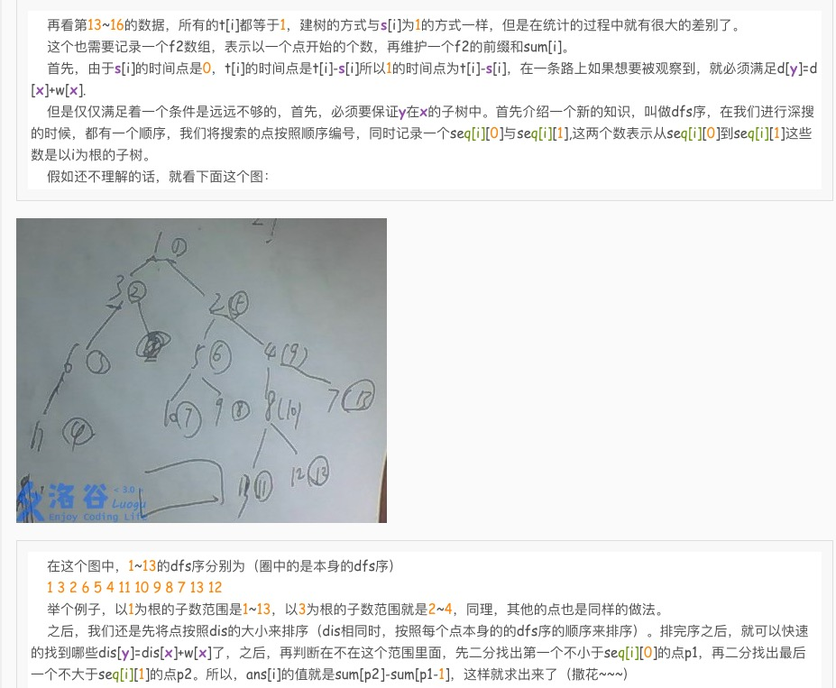

$NOIP2016$以及之前年份$NOIP$中优秀题目的泛做。
以下的题是我做了之后不禁感慨“啊，真是个好题”的题们……
然后首先打出难度标签：
然后以下题目按照得较高的部分分的难度排序
$ 1 2013F$ 华容道
可能这道题很难…但是它有70分的暴力分！70分！在loj你甚至可以获得80分！tm这样的话暴力和正解有什么区别吗…从得分的时间分布上来讲，想正解就是大写的不值……
首先我们思考什么信息是有用的，嗯，空白格子的位子和当前棋子的位置，所以只要我们用BFS（而不是DFS，DFS的状态开销极大，但更可能的是我DFS的打开方式不对吧/sigh）的话，状态数就是$O(n^2m^2)$的，然后总复杂度就是$O(qn^2m^2)$，大概是四亿零500万的运算量上限…然而一开始我算成了四千五百万还纳闷为什么开了-O2在1s以内还跑不出来……
先贴个暴力吧：
1 | void bfs(){ |
喜闻乐见…不过自己打暴力的能力还是不行啊，还得练啊qaq
之后就是更加喜闻乐见的状态压缩。我们思考，这$n^2m^2$个状态都他娘的有鸟用吗（李云龙疾呼态），如果空白格子不在目标格子周围，那么无论空白格子怎么移动都不可能用爱发电。所以我们考虑吧直接预处理出来每个空白格子与目标格子（即起始格子）相邻的状态之间的代价，之后直接对此跑个$SPFA$就好了，毕竟最坏情况下SPFA的复杂度也只是$O(nM)$的，大概就是$O(n\cdot 4nm)<\frac{O(n^2m^2)}{7.5}$，也算是很稳的复杂度了。
然后我们思考这样的复杂度是多少。考虑目标格子有$nm$种情况，空白格子在有效情况下只能在其四周，故状态数是$O(4nm)=nm$的。
然后关于代码实现这块需要比较深入的理解。首先我们先预处理出来当当前格子在随便一个格子上，空白格子想要转到另一个方向的步数。这样就可以抽象成一张空白图上先有的一个一个树（也就是一坨森林）。然后为了让这些森林之间能连上边，再将“空白格子和目标格子换了个位置”这种转移连上边（不连的话就不存在从一个格子到另一个格子的转移了）。同时不要忘了对状态的编号。即：
1 | inline int _get(int x, int y, int d){ return x * 120 + y * 4 + d ; } |
以及
1 | for (i = 1 ; i <= N ; ++ i) |
然后我们考虑在SPFA之前，我们需要求出空白格子从(ex,ey)到(sx, sy)周围需要的步数作为起始点，然后SPFA就好了。
1 | void Spfa(){ |
$2~2012C$ 开车旅行
不得不说2012的题目质量是真心好啊……
首先这题为了看上去不是那么毒瘤，于是加了一个70分的暴力分。然而…细节贼多——或者说只是我不细心，比如说把A和B怎么走看反了、算比值的时候用了个假double之类的……
于是70分好像有个头就会写吧= = 不知道当年什么区分度= =
1 | struct Path{ |
然后感觉从暴力到正解完全不是一个难度的。首先考虑到底是什么地方阻碍了社会的发展——初始化似乎是$n^2$的，走似乎是$<n^2$的，那么从初始化入手：
$\rm{Part~1}$ 初始化的优化
我们思考如果当前轮到第$i$高的城市了，并且此时所有现存城市中不存在编号在$i$之前的城市，即$i$是最左边的城市，那么对其有用的信息只会在第$i-1,i-2,i+1$或者第$i+2$的城市中选取。这就提示我们似乎如果从值域上考虑就是$O(4n)$的了——只要我们保证不存在在$i$左边的城市、即对应城市不可走的情况。
然后这个时候有个很神仙的想法就是双向链表优化，我们考虑按高度排完序之后，对相邻元素建立双向链表。然后按照从左到右的顺序枚举城市、get信息然后删除掉这个城市。
1 | inline bool cmp(BASE A, BASE B){ return A.h < B.h ; } |
然后初始化的工作就优化完了。至此可以在Luogu获得75pts的好成绩。
$\rm{Part~2}$ 走的优化
…然而只有第一个优化情况并不会好转多少。查看数据之后发现原来最后几个点的$s$和$x$都完全是随的那种……所以就复杂度爆炸。然后我们考虑这么一个喜闻乐见的事情——限制似乎只有“小于x”和“可以继续走”诶，于是似乎相邻的几步如果都不超过限制是不是就可以一起走？于是想到倍增预处理。
我们用$A_{i,j}$表示从i号点开始，走$2^j$轮之后$A$走过的路程；同理$B_{i,j}$表示从i号点开始，走$2^j$轮之后$B$走过的路程。并且选择用$f_{i,j}$表示从i开始走$2^j$轮之后到达的点。然后值得注意的是最后可能走的不满一整轮，于是特判一下A能不能再走一次就好。
1 | sort(base + 1, base + N + 1, cmp2) ;//重排回来= = |
$3~2016B$ 天天爱跑步
……当年的毒瘤题，还记得那还是我第一次参加NOIP（普及组），不出所料地考挂，然后rqy不出所料地考好……
咳，偏题了，然后对于这道题，我索性把每个部分分都写了一遍：
$\rm{Part~1}$ 25pts
$n,m\leq 1000$
其实就是LCA一下然后$nm$的统计答案就完了。
1 | void build(int now, int f){ |
$\rm{Part~2}$ 15pts
这部分是链，保证$i$到$i+1$有一条边。
那么其实这个问题就转化成了在一个序列上，与点$i$相隔恰好为$t[i]$的点的个数，顺便注意判断一下走没走完就好。但是这个地方我用了一个肥肠zz的写法，就是每次加完之后删除到这个点停止的那些点，而“那些点”的求法则是我手写了一个很诡异的二分……
1 | namespace Tink{ |
$\rm{Part~3}$ 20pts
保证所有起点都在根（1号点）。
其实这个部分也是挺水的。就是考虑一个树形DP即可。然后判断也很好判断，如果这个点的开眼时间正好是根到它的距离（深度差），那么就会一定会满足到它的点和到它的子树内的所有的点。否则就肯定不行，也就是一个都不满足。
1 | namespace DP{ |
于是现在就有了60pts的优秀分数。似乎这样的话就可以直接把剩下的部分弃了去写T3的期望DP辽233
$\rm{Part~4~and~5}$ 40pts
剩下的部分没有选择分开写所以就不算谢了每个部分分是不是，因为剩下的两个部分实在是太像了，都要用到一种思想——桶. 其实80pts还有一种不是很想写的写法在这里就留个图吧：

然后我们思考桶的解法。我们把每一段路程拆成向上和向下两段。下文中设$x$为当前节点。
对于向上的路径
- 首先可以产生贡献的点就是子树内的$buc[dep[x]+ base[x]]$，这个我们用作差来求解（原因是我们可能会遍历许多棵子树所以会产生数值相同但不合法的贡献）。
- 其次我们需要知道，如果一个人的起点和终点的LCA在子树内但不是$x$，那么也不会产生贡献。解决方案是每次dfs完一个点向上回溯的时候删除掉子树内所有以该点为LCA的点。
- 同时也需要我们更新以该节点为起点的路径的桶。
对于向下的路径
- 首先对于一条路径$(u,v)$，当对点i产生贡献时可以推出来式子：
那么也就是说我们可以通过把每条路径的$dep_v-dis_{u,v}$压到桶里面，然后每次计算贡献。- 同时我们还是需要消除贡献，即消除那些对于儿子而言在父亲那里停止的路径，方法就是在向下迭代之前先把所有以当前点为终点的贡献加上，到儿子时通过作差就可以减去这部分。注意向上回溯时还是需要删除那些蜷缩在子树内的路径。
之后还有需要注意的，就是如果在一条路径的LCA处正好可以观察到这条路径，那么就需要-1，因为我们上升下降统计了两遍。
1 | namespace Prepare{ //25 |
嗯，然后这道题就完了。不得不说虽然当时用心做了，但是过上几周再反过头来看还是觉得有些细节理解的并不到位、或者说是满分做法中的有些流程当时根本没有仔细推导。
不过不得不说这个题还是非常妙的。或许有时候题面复杂、需求复杂会让人忘记这道题到底有多巧妙…反正就是感觉这道题用“桶+即时修改”这个组合思想还是很nice的。
$4~2012F$ 疫情控制
…这个题之所以放在最后一个是因为我真的不知道部分分该怎么写啊。
嗯，首先是二分，这倒是可以想到。之后一开始想的是似乎不断把城市向上移动就好了，毕竟越靠上越优；但是样例就把我这种写法卡掉了，原因很浅显，我忽略了绕过根继续走的那些点可以继续产生贡献……于是就很GG。
…于是我选择统计了那些可以跨越根的节点。对于最终每个被覆盖的节点，我用的是直接更新vector预处理出来挂在每个点底下的叶子节点，check的时候直接判一下每个节点的mark。然而这样写的很繁琐，并且复杂度也是个迷…最后只能不了了之了
所以大概这个题我想出了50%~60%？…然而还是没有分数。
$\rm{Part~1}$ 倍增！倍增！倍增！
首先喜闻乐见的是，我们向上跳的时候van♂全可以用倍增来搞，只要预处理出$2^k$级祖先就好了。
然后注意顺便判断一下可不可以拐弯，即跳到根之后是否在二分的时间内可以继续向下跳。
1 |
|
$\rm{Part~2}$ 转化！转化！转化！
这个地方有个肥肠有意思的点，就是我们思考假设一个叶子节点没有被覆盖，那么就说明一定存在它的某一级祖先的整棵子树没有被覆盖。那么这就提示我们可以考虑直接判断根的每个儿子是否都被覆盖了（树形结构的优越性）
嗯，于是对于我们上一部分打完mark之后的那些点（暂时是只有不会拐弯的被打了mark），我们直接考虑不进行一次$O(n)$的dfs就可以完成push_up的操作。
然后我们考虑如何操作那些可以拐弯的点。思考最优的方案一定是越高越好，所以不妨就让他拐过来之后落在根的儿子上。于是我们需要统计这个的代价，并对收集来的两个信息分别排序。之后就直接双指针扫一遍根的全部儿子，看看是否全部都被覆盖了即可。
1 | void push_down(int rt){ |
嗯，贴个总程序吧：
1 | struct Edge{ |
$\rm{Afterword}$
其实总感觉自己做这些题还是有些力不从心233
不得不说类似于“二分答案”这种东西是很有OI风味的，毕竟是一种特殊的思想…不知道自己什么时候能把类似的所有思想真正地打包学会啊qaq